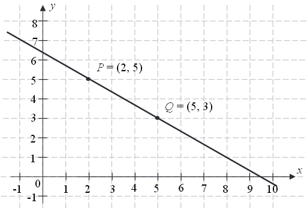
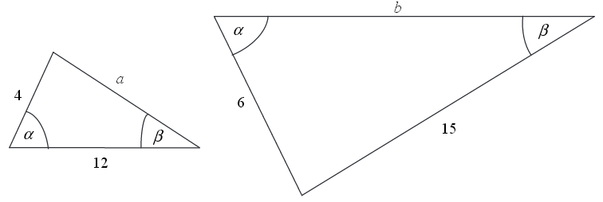
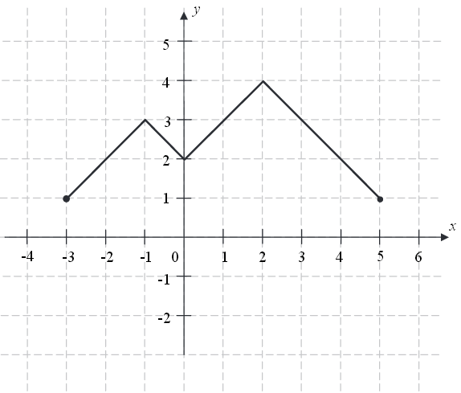

Matura 2015 maj - technikum
Cena pewnego towaru wraz z \(7\)-procentowym podatkiem VAT jest równa \(34\ 347\)
zł. Cena tego samego towaru wraz z \(23\)-procentowym podatkiem VAT będzie równa
A.\( 37\ 236 \) zł
B.\( 39\ 842{,}52 \) zł
C.\( 39\ 483 \) zł
D.\( 42\ 246{,}81 \) zł
C
Najmniejszą liczbą całkowitą dodatnią spełniającą nierówność \(|x+4{,}5|\ge 6\)
jest
A.\( x=1 \)
B.\( x=2 \)
C.\( x=3 \)
D.\( x=6 \)
B
Liczba \(2^{\frac{4}{3}}\cdot \sqrt[3]{2^5}\) jest równa
A.\( 2^{\frac{20}{3}} \)
B.\( 2 \)
C.\( 2^{\frac{4}{5}} \)
D.\( 2^3 \)
D
Liczba \(2\log_5 10 - \log_5 4\) jest równa
A.\( 2 \)
B.\( \log_5 96 \)
C.\( 2\log_5 6 \)
D.\( 5 \)
A
Zbiór wszystkich liczb rzeczywistych spełniających nierówność
\(\frac{3}{5}-\frac{2x}{3}\ge \frac{x}{6}\) jest przedziałem
A.\( \left \langle \frac{9}{15}, +\infty \right ) \)
B.\( \left ( -\infty , \frac{18}{25} \right \rangle \)
C.\( \left \langle \frac{1}{30}, +\infty \right ) \)
D.\( \left ( -\infty , \frac{9}{5} \right \rangle \)
B
Dziedziną funkcji \(f\) określonej wzorem \(f(x)=\frac{x+4}{x^2-4x}\) może być
zbiór
A.wszystkich liczb rzeczywistych różnych od \( 0 \) i \(4\).
B.wszystkich liczb rzeczywistych różnych od \( -4 \) i \(4\).
C.wszystkich liczb rzeczywistych różnych od \( -4 \) i \(0\).
D.wszystkich liczb rzeczywistych.
A
Rozwiązaniem równania \(\frac{2x-4}{3-x}=\frac{4}{3}\) jest liczba
A.\( x=0 \)
B.\( x=\frac{12}{5} \)
C.\( x=2 \)
D.\( x=\frac{25}{11} \)
B
Miejscem zerowym funkcji liniowej określonej wzorem \(f(x)=-\frac{2}{3}x+4\) jest
A.\( 0 \)
B.\( 6 \)
C.\( 4 \)
D.\( -6 \)
B
Punkt \(M=\left ( \frac{1}{2},3 \right )\) należy do wykresu funkcji liniowej
określonej wzorem \(f(x)=(3-2a)x+2\). Wtedy
A.\( a=-\frac{1}{2} \)
B.\( a=2 \)
C.\( a=\frac{1}{2} \)
D.\( a=-2 \)
C
Na rysunku przedstawiono fragment prostej o równaniu \(y=ax+b\).  Współczynnik kierunkowy tej prostej
jest równy
A.\( a=-\frac{3}{2} \)
B.\( a=-\frac{2}{3} \)
C.\( a=-\frac{2}{5} \)
D.\( a=-\frac{3}{5} \)
B
W ciągu arytmetycznym \((a_n)\) określonym dla \(n\ge 1\) dane są \(a_1=-4\) i
\(r=2\). Którym wyrazem tego ciągu jest liczba \(156\)?
A.\( 81 \)
B.\( 80 \)
C.\( 76 \)
D.\( 77 \)
A
W rosnącym ciągu geometrycznym \((a_n)\), określonym dla \(n\ge 1\), spełniony jest
warunek \(a_4=3a_1\). Iloraz \(q\) tego ciągu jest równy
A.\( q=\frac{1}{\sqrt[3]{3}} \)
B.\( q=\frac{1}{3} \)
C.\( q=3 \)
D.\( q=\sqrt[3]{3} \)
D
Drabinę o długości \(4\) metrów oparto o pionowy mur, a jej podstawę umieszczono w
odległości \(1{,}30\) m od tego muru (zobacz rysunek).  Kąt \(\alpha \), pod jakim ustawiono drabinę, spełnia warunek
Kąt \(\alpha \), pod jakim ustawiono drabinę, spełnia warunek
Kąt \(\alpha \), pod jakim ustawiono drabinę, spełnia warunek
A.\( 0^\circ \lt \alpha \lt 30^\circ \)
B.\( 30^\circ \lt \alpha \lt 45^\circ \)
C.\( 45^\circ \lt \alpha \lt 60^\circ \)
D.\( 60^\circ \lt \alpha \lt 90^\circ \)
D
Kąt \(\alpha \) jest ostry i \(\sin \alpha =\frac{2}{5}\). Wówczas \(\cos \alpha \)
jest równy
A.\( \frac{5}{2} \)
B.\( \frac{\sqrt{21}}{4} \)
C.\( \frac{3}{5} \)
D.\( \frac{\sqrt{21}}{5} \)
D
W trójkącie równoramiennym \(ABC\) spełnione są warunki: \(|AC|=|BC|\),
\(|\sphericalangle CAB|=50^\circ \). Odcinek \(BD\) jest dwusieczną kąta \(ABC\), a odcinek \(BE\)
jest wysokością opuszczoną z wierzchołka \(B\) na bok \(AC\). Miara kąta \(EBD\) jest równa 
A.\( 10^\circ \)
B.\( 12{,}5^\circ \)
C.\( 13{,}5^\circ \)
D.\( 15^\circ \)
D
Przedstawione na rysunku trójkąty są podobne.  Wówczas
A.\( a=13 \), \(b=17 \)
B.\( a=10 \), \(b=18 \)
C.\( a=9 \), \(b=19 \)
D.\( a=11 \), \(b=13 \)
B
Proste o równaniach: \(y=2mx-m^2-1\) oraz \(y=4m^2x+m^2+1\) są prostopadłe dla
A.\( m=-\frac{1}{2} \)
B.\( m=\frac{1}{2} \)
C.\( m=1 \)
D.\( m=2 \)
A
Dane są punkty \(M=(3,-5)\) oraz \(N=(-1,7)\). Prosta przechodząca przez te punkty
ma równanie
A.\( y=-3x+4 \)
B.\( y=3x-4 \)
C.\( y=-\frac{1}{3}x+4 \)
D.\( y=3x+4 \)
A
Dane są punkty \(P=(-2,-2)\), \(Q=(3,3)\). Odległość punktu \(P\) od punktu \(Q\)
jest równa
A.\( 1 \)
B.\( 5 \)
C.\( 5\sqrt{2} \)
D.\( 2\sqrt{5} \)
C
Punkt \(K=(-4,4)\) jest końcem odcinka \(KL\), punkt \(L\) leży na osi \(Ox\), a
środek \(S\) tego odcinka leży na osi \(Oy\). Wynika stąd, że
A.\( S=(0,2) \)
B.\( S=(-2,0) \)
C.\( S=(4,0) \)
D.\( S=(0,4) \)
A
Okrąg przedstawiony na rysunku ma środek w punkcie \(O=(3,1)\) i przechodzi przez
punkty \(S=(0,4)\) i \(T=(0,-2)\). Okrąg ten jest opisany przez równanie 
A.\( (x+3)^2+(y+1)^2=18 \)
B.\( (x-3)^2+(y+1)^2=18 \)
C.\( (x-3)^2+(y-1)^2=18 \)
D.\( (x+3)^2+(y-1)^2=18 \)
C
Przekątna ściany sześcianu ma długość \(2\). Pole powierzchni całkowitej tego
sześcianu jest równe
A.\( 24 \)
B.\( 12\sqrt{2} \)
C.\( 12 \)
D.\( 16\sqrt{2} \)
C
Kula o promieniu \(5\) cm i stożek o promieniu podstawy \(10\) cm mają równe
objętości. Wysokość stożka jest równa
A.\( \frac{25}{\pi } \) cm
B.\( 10 \) cm
C.\( \frac{10}{\pi } \) cm
D.\( 5 \) cm
D
Średnia arytmetyczna zestawu danych: \[2,4,7,8,9\] jest taka sama jak średnia
arytmetyczna zestawu danych: \[2,4,7,8,9,x.\] Wynika stąd, że
A.\( x=3 \)
B.\( x=5 \)
C.\( x=6 \)
D.\( x=0 \)
C
W pewnej klasie stosunek liczny dziewcząt do liczby chłopców jest równy \(4:5\).
Losujemy jedną osobę z tej klasy. Prawdopodobieństwo tego, że będzie to dziewczyna, jest równe
A.\( \frac{4}{5} \)
B.\( \frac{4}{9} \)
C.\( \frac{1}{4} \)
D.\( \frac{1}{9} \)
B
Wykaż, że dla każdej liczby rzeczywistej \(x\) i dla każdej liczby rzeczywistej
\(y\) prawdziwa jest nierówność \(4x^2-8xy+5y^2\ge 0\).
Rozwiąż nierówność \(2x^2-4x\ge x-2\).
\(x\in \left(-\infty ;\frac{1}{2}\right\rangle \cup \langle 2;+\infty )
\)
Rozwiąż równanie \(4x^3+4x^2-x-1=0\).
\(x=-1\) lub \(x=-\frac{1}{2}\) lub \(x=\frac{1}{2}\)
Na rysunku przedstawiono wykres funkcji \(f\).  Funkcja \(h\) określona jest dla \(x\in \langle -3,5 \rangle \)
wzorem \(h(x)=f(x)+q\), gdzie \(q\) jest pewną liczbą rzeczywistą. Wiemy, że jednym z miejsc
zerowych funkcji \(h\) jest liczba \(x_0=-1\).
a) Wyznacz \(q\).
b) Podaj wszystkie pozostałe miejsca zerowe funkcji \(h\).
b) Podaj wszystkie pozostałe miejsca zerowe funkcji \(h\).
\(q=-3\), \(x=1\) lub \(x=3\)
Dany jest skończony ciąg, w którym pierwszy wyraz jest równy \(444\), a ostatni
jest równy \(653\). Każdy wyraz tego ciągu, począwszy od drugiego, jest o 11 większy od wyrazu
bezpośrednio go poprzedzającego. Oblicz sumę wszystkich wyrazów tego ciągu.
\(10970\)
Dany jest okrąg o środku w punkcie \(O\). Prosta \(KL\) jest styczna do tego okręgu
w punkcie \(L\), a środek \(O\) tego okręgu leży na odcinku \(KM\) (zobacz rysunek). Udowodnij, że
kąt \(KML\) ma miarę \(31^\circ \). 
Wysokość graniastosłupa prawidłowego czworokątnego jest równa \(16\). Przekątna
graniastosłupa jest nachylona do płaszczyzny podstawy pod kątem, którego cosinus jest równy
\(\frac{3}{5}\). Oblicz pole powierzchni całkowitej tego graniastosłupa.
\(P=144+384\sqrt{2}\)
Wśród \(115\) osób przeprowadzono badania ankietowe, związane z zakupami w pewnym
kiosku. W poniższej tabeli przedstawiono informacje o tym, ile osób kupiło bilety tramwajowe ulgowe
oraz ile osób kupiło bilety tramwajowe normalne.
| Rodzaj kupionych biletów | Liczba osób |
| ulgowe | 76 |
| normalne | 41 |
Uwaga! \(27\) osób spośród ankietowanych kupiło oba rodzaje biletów.
Oblicz prawdopodobieństwo zdarzenia polegającego na tym, że osoba losowo wybrana spośród
ankietowanych nie kupiła żadnego biletu. Wynik przedstaw w formie nieskracalnego ułamka.
\(\frac{5}{23}\)
Biegacz narciarski Borys wyruszył na trasę biegu o 10 minut później niż inny
zawodnik, Adam. Metę zawodów, po przebyciu \(15\)-kilometrowej trasy biegu, obaj zawodnicy pokonali
równocześnie. Okazało się, że wartość średniej prędkości na całej trasie w przypadku Borysa była o
\(4{,}5\) km/h większa niż w przypadku Adama. Oblicz, w jakim czasie Adam pokonał całą trasę biegu.
\(50\) min